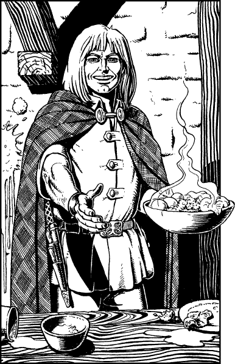

259
Begrudgingly you pay the innkeeper 6 Nobles and then you ask that he bring you some of the food you have paid for. He points to a table and tells you to go and wait. The food will be brought to you shortly.
As you take your seat, you are approached by a smiling, fair-haired young man who is attired in a cloak of darkly-patterned wool. He has strong Sommlending features and the cut of his clothes tells you that he is a member of a guild from your homeland. He is holding a plate of steaming vegetables.

‘Well met, Master Kai,’ he says, wiping and offering his hand in friendship. ‘I am Melchar, journeyman to the Silversmiths’ Guild of Toran. I’m honoured to make with your acquaintance. May I join you? The food here is indescribable … but it fills an empty belly.’ You welcome the young man to sit down and the innkeeper appears with your food. As you share your meal, you learn more about him and this region of Shadaki.
Melchar is on his way home to Toran. He has spent the past six months studying in Tiklu at the workshops of a famous silversmith of that city. During his stay he also studied the history of this region. On hearing of your encounters at sea he tells you that the buccaneers of Shadaki are renegades from the remnants of a great fleet that was created by the Wytch-king Shasarak. Following the overthrow of their master, these renegades were banished to the wastes of the Sadi Desert by Grey Star—the Wizard Regent of the Free Peoples. However, the buccaneers have recently returned to prey upon the rich sea lanes, and their piracy has grown unchecked ever since Grey Star disappeared three months ago from his palace in the city of Shadaki. His court officials maintain that he is abroad on a quest to western Magnamund, but rumour is rife that he has been abducted by necromancers who wish for a return to the dark days of Shasarak’s rule.
Melchar asks what has brought you to this part of the world and you tell him simply that you are on your way to the Port of Suhn to meet with Lord Zinair of Dessi. On hearing this, Melchar says that he may be able to help you reach your destination.